Business Intelligence
Business Analytics
Gliederung
Business Analytics
- Einführung
- Dashboards
- Einordnung
- Definition
- Klassifikation
- Einsatzbereiche
- Visualisierung von Daten
- Marktübersicht
Einordnung

Einführung
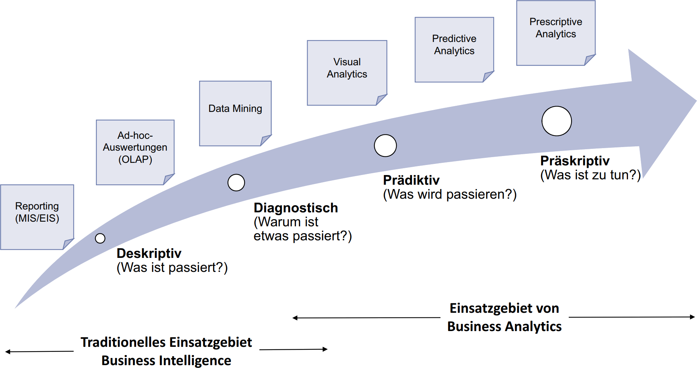
Dashboards - Einordnung
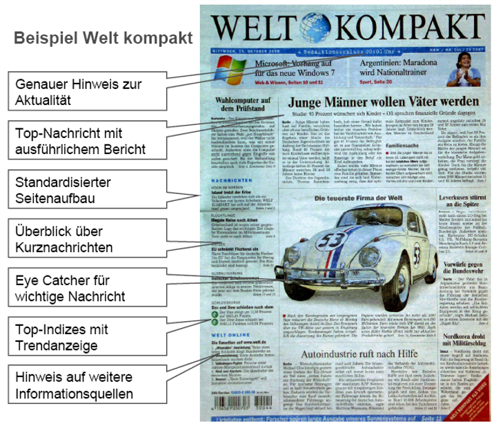
Dashboards - Einordnung
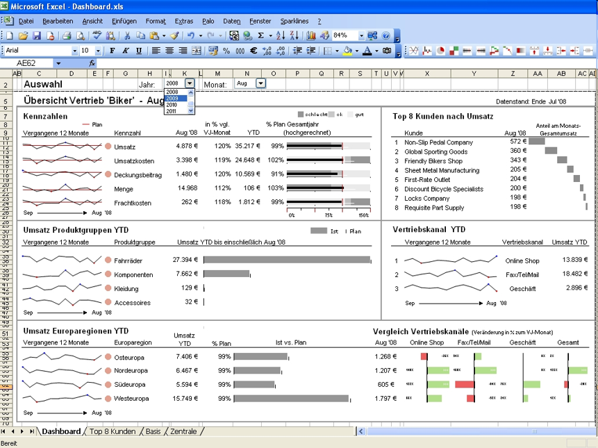
Dashboards
Definition
Dashboards are a reporting mechanism that aggregates and displays metrics and key indicators so they can be examined at a glance by all possible audiences. Dashboards help improve decision making by revealing and communicating contextual insights into metrics to display indicators with intuitive visualization, including charts, scales, gauges, and traffic lights that show indicator progress toward defined goals.
Dashboards - Klassifikation
- Strategische Dashboards (Executive Dashboards)
- größte Verbreitung
- hochgradig verdichtete Kennzahlen
- leicht zugängliche Darstellungsform ohne aufwendige Interaktionsmöglichkeiten
- langfristigen Unternehmungsziele
- breite Perspektive auf die gesamte Unternehmung
- Taktische Performance Dashboards
- Bereichs- oder Abteilungsebene
- Erfolg kurzfristigerer Geschäftsaktivitäten
- Aufdecken von Trends sowie von Problemursachen
- Leistungsfähige Analysemöglichkeiten
- Operative Dashboards
- Überwachung und Steuerung des betrieblichen Tagesgeschäftes
Dashboards - Klassifikation
Drei Anwendungsbereiche
| Monitoring | Analysis | Management | |
|---|---|---|---|
| Purpose | Convey information at a glance | Analyze exception conditions | Improve coordination and collaboration |
| Components |
|
|
|
Dashboards - Klassifikation
Datenebenen
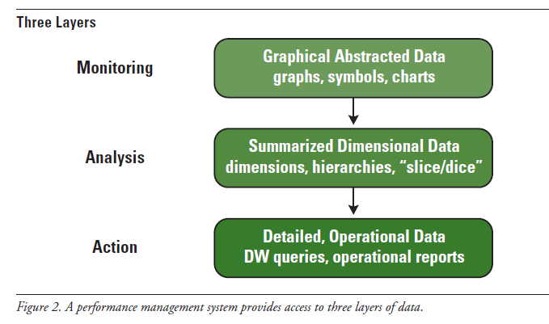
Dashboards - Klassifikation
Architektur von PMS
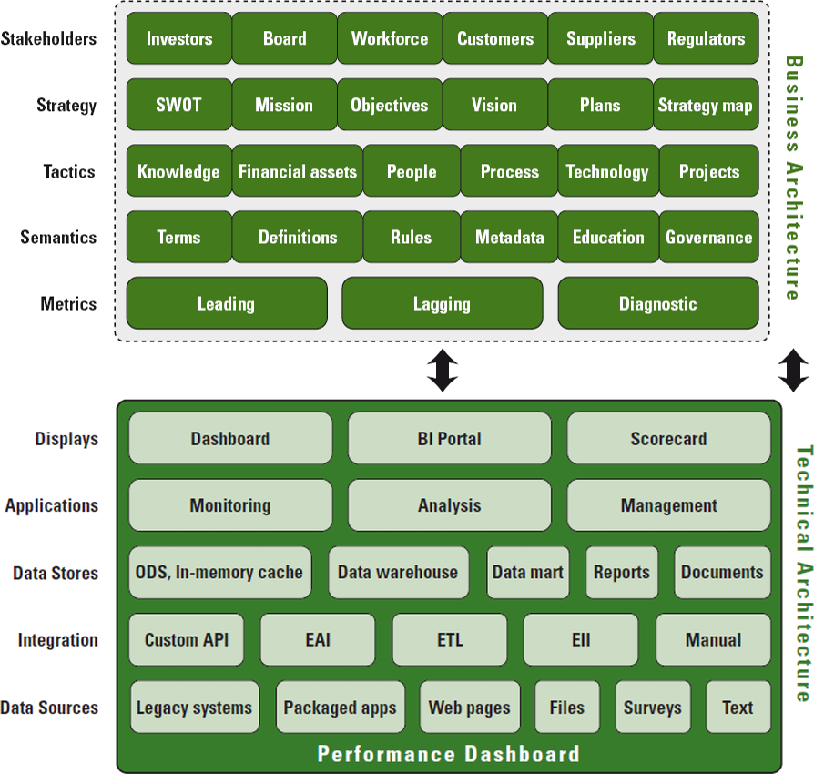
Dashboards - Klassifikation
Umfrage: Einsatzbereiche
Dashboards versus Scorecards
| Dashboard | Scorecard | |
|---|---|---|
| Purpose | Measure performance | Charts progress |
| Users | Managers, staff | Executives, managers, staff |
| Updates | Real-time to right-time | Periodic snapshots |
| Data | Events | Summaries |
| Top-level Display | Charts and tables | Symbols and icons |
Dashboards - Einsatzbereiche
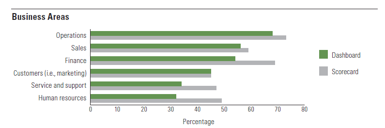
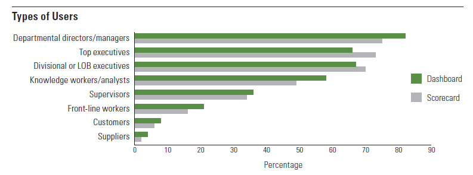
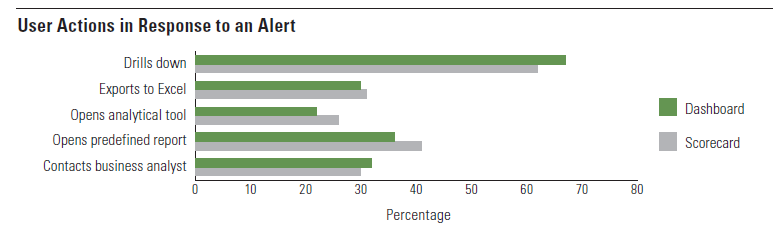
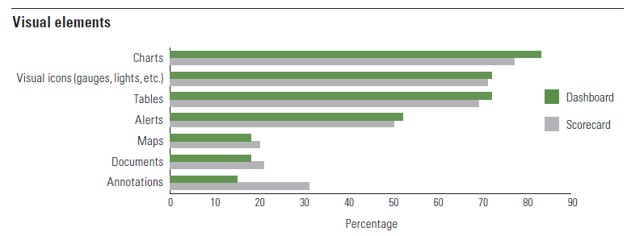
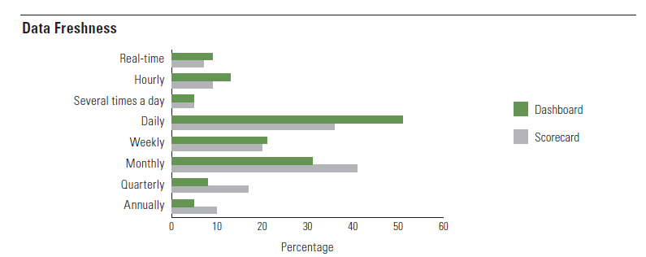
Visualisierung von Daten

Information overload
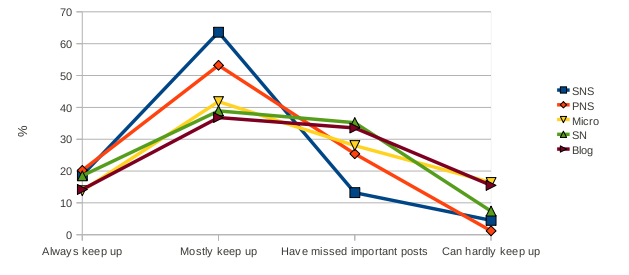
Visualisierung von Daten
Rettung von Menschenleben
- Dr. John Snow
- London 1854
- Todesfälle in Straßenkarte eingetragen
- Wasserpumpe als Ursache für Choleraepidemie identifiziert
- Transfer der Daten aus dem ursprünglichen zeitlichen Zusammenhang in einen neuen, geographischen Kontext.
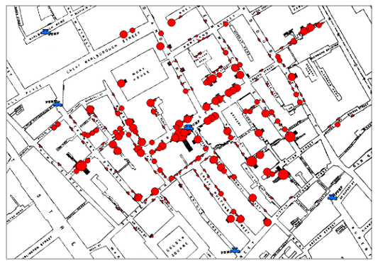
Bissantz, N., Mertens, P., Butterwegge, G., Christ, V.: Visualisierung betriebswirtschaftlicher Daten in Chamoni, P., Gluchowski, P., (2010). Analytische Informationssysteme: Business Intelligence-Technologien und -Anwendungen. Berlin. Springer
The Guardian: John Snow's data journalism: the cholera map that changed the world
Visualisierung von Daten
Charles Joseph Minard (1781-1870)

Visualisierung von Daten
Mashup
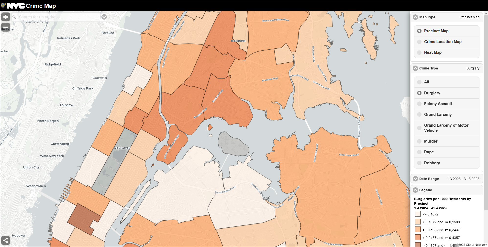
Visualisierung von Daten
Visualisierung von Daten
Absturz der Challenger (28.01.1986)
- The [Rogers] Commission concluded that there was a serious flaw in the decision making process [...].
- Had these matters been clearly stated and emphasized in the flight readiness process [...], it seems likely that the launch of 51-L might not have occurred when it did.
- Die Dichtungsprobleme waren bekannt.
- Die Ingenieure hatten in 13 (verwirrenden) Folien die richtigen Schlüsse gezogen.
- Das Management gab den Start frei.
Visualisierung von Daten
Scheitern der LB Sachsen (Sommer 2007)
Man kriegt ja regelmäßig den Risikobericht, da kann man nachgucken. Und da hat man so eine kleine Ampel drin, mit den drei Farben, rot, gelb, grün. Und wenn es grün ist, und der überwiegende Teil war eben im grünen Bereich, hoch geratet von internationalen Agenturen, „Triple A“ heißt das, sagt man, na, dann scheint es so zu gehen.
in den Tagesthemen vom 27. August 2007
Fazit: Es gibt richtige und falsche Wege, Daten zu präsentieren.
Visualisierung von Daten
Zeitreihen
Explodierende Heizölpreise?
- Der Heizölpreis ist explodiert,
- der Strompreis leicht gestiegen,
- und der von Erdgas fast konstant?
Oder doch nicht?
| 1991 | 2007 | Δ | |
|---|---|---|---|
| Heizöl | 26,38 | 58,63 | +122 % |
| Strom | 14,80 | 20,15 | +36 % |
| Erdgas | 3,55 | 6,51 | +83 % |
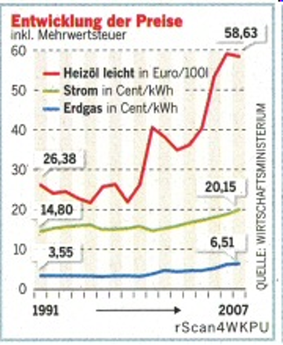
Visualisierung von Daten
Zeitreihen
- Entscheidend sind nicht die absoluten sondern die relativen Zuwächse.
- Bei einer logarithmischen y-Achse führen gleiche relative Zuwächse auch zu einer gleichen Steigung.
- Bauen Sie das mal in Excel!
- Lösung: Logarithmic Axis Scales
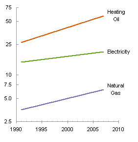
Visualisierung von Daten
Kann man Unternehmen wie Autos steuern?
- Die Informationsdichte von Dashboards ist meist geringer als die im Sportteil der Zeitung.
- Brauchen Manager weniger Daten, um den Zustand ihres Unternehmens zu beurteilen, als ein Fußballfan, um den Spielstand der Bundesliga zu erfassen?
- Historisierung fehlt
- Fiktion von Eindeutigkeit
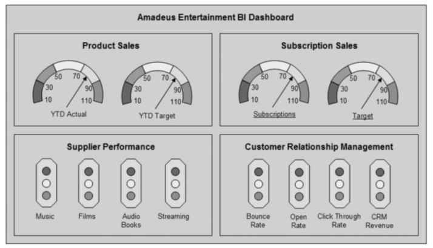
Visualisierung von Daten
Methodische Fortschritte zwischen Ampel und Tabelle
Deckungsbeitragsdaten für zwölf Monate im Ist und Plan
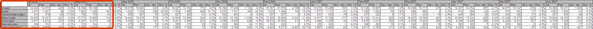
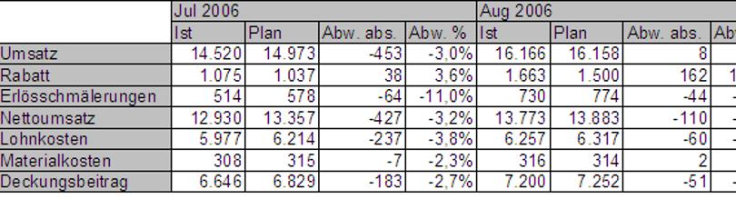
Mit einer normalen Tabelle nicht zu schaffen: Deckungsbeitragsdaten für 12 Monate mit Ist, Plan, absoluter und relativer Abweichung als Tabelle.
Visualisierung von Daten
Methodische Fortschritte zwischen Ampel und Tabelle
Deckungsbeitragsdaten für zwölf Monate im Ist und Plan
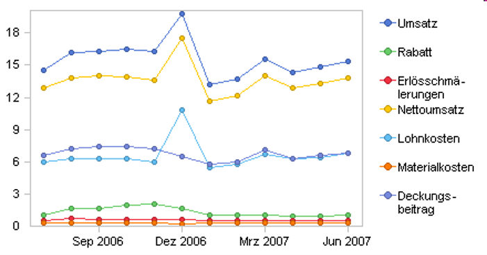
Auch eine Businessgrafik stößt schnell an ihre Grenzen: Beschriftung und Skalierung werden nur unbefriedigend gelöst.
Visualisierung von Daten
Methodische Fortschritte zwischen Ampel und Tabelle
Deckungsbeitragsdaten für zwölf Monate im Ist und Plan
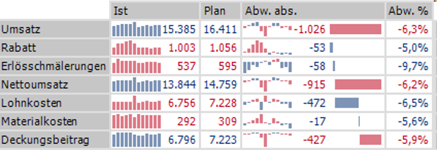
Kaum zu glauben: der Informationsgehalt einer vierseitigen Tabelle auf 450 Pixel Breite
Visualisierung von Daten
Methodische Fortschritte zwischen Ampel und Tabelle
Sparklines
Grafiken in Wortgröße, die aus der eigentlichen Grafik und einem oder mehreren Referenzwerten bestehen. Letztere stellen die Vergleichbarkeit der grafisch repräsentierten Werte untereinander her.
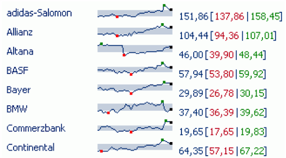
Visualisierung von Daten
Spiegelmining
Marktübersicht
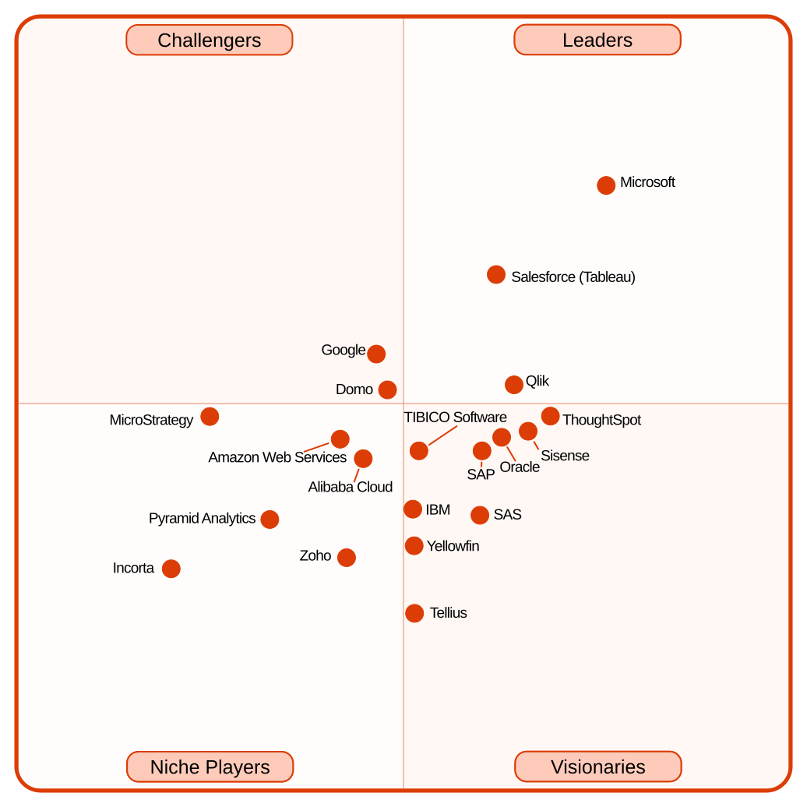
Literatur
- Fichtel, S., Praxisbuch Infografik, Frechen 2022
- Eckerson, W. W., Performance Dashboards: Measuring, Monitoring, and Managing Your Business, 2.Auflage, 2010
- Kohlhammer J., et al., Visual Business Analytics: Effektiver Zugang zu Daten und Informationen, 2. überarb. u. akt. Edition, 2018
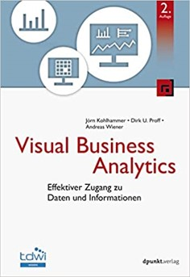